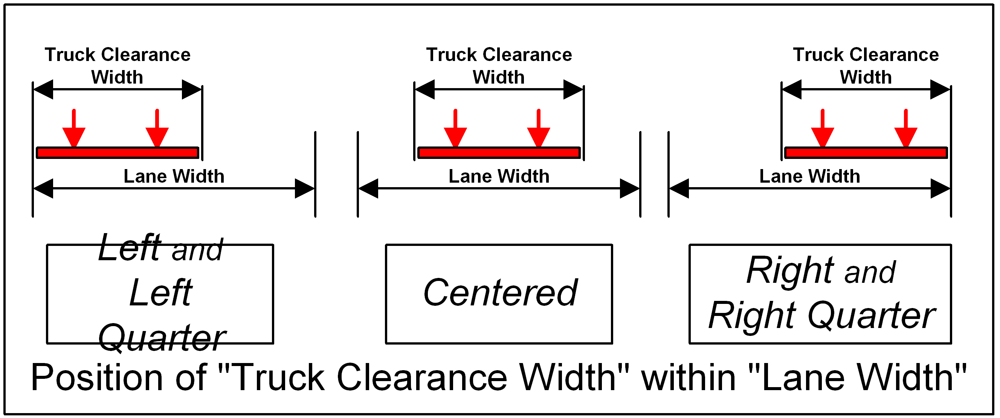

Lane Group Positioning Methods
- CTR:
Center Of Bridge Only
- LCR:
Left, Center, and Right of Bridge
- LCRQ:
Left, Left Quarter, Center, Right Quarter, Right positions on the bridge.
A Lane Group is a set of lanes of 3D Live Load Modeling Guidelines for Truss Bridges:Lane Width placed side by side with no space between.
No gap between multiple loaded lanes.
Movement within a lane is not considered, but the 3D Live Load Modeling Guidelines for Truss Bridges:Lane Width Definition is positioned within the lane in accordance with the positioning codes: CTR, LCR, LCRQ. Please see the graphic below.
If the lane group can not be completely fit between the right and left edges, then that configuration is not processed. For example, if the lane group centered over the left quarter point causes the left side of the group to extend beyond the left edge, then that loading configuration would not be processed.
The placement of the 3D Live Load Modeling Guidelines for Truss Bridges:Lane Width Definition, TCW, within the lane depends on the placement of the lane group. If the lane group position is Left or Left Quarter, then the TCW will be placed against the left edge of the lane boundary. For Center placement, the TCW will be centered in the lane. For Right and Right Quarter placements, the TCW will be placed against the right edge of the lane boundary.

On narrow bridges it is possible for a truck axle to leave the road surface. When this happens, the program will issue a warning message. Typically this will occure when the truck clearance width, and striped lane width is not reduced in accordance with the specifications defined in the 3D Live Load Modeling Guidelines for Truss Bridges:Lane Width Definition of the WSDOT Live Load Criteria in topic page 3D Live Load Modeling Guidelines for Truss Bridges. A truck axle leaving the road surface might not be a critical condition, and it is up to the engineer to determine if adjustments to the truck parameters is required.